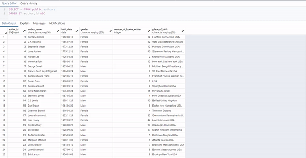

Nart
Built an eCommerce site that sells digital art. Utilized a MERN (MongoDB, ExpressJS, React and Node.JS) stack.
Homelessness in New York City

Collaborated with a partner to create a tutorial in Jupyter Notebook that provides a walkthrough on performing an exploratory analysis on a data source. Utilized pandas in Python to scrape, filter, and analyze data to provide insight on the homeless population in NYC.
Library Database
Simulated a library with a books, authors, and genres tables in pgAdmin using PostgreSQL. Wrote queries involving filtering, aggregation, and subqueries to retrieve specific data.
Fruity Falls

Designed a 2D pixel game where the player is a fruit ninja avoiding the falling coconuts and gaining health by eating starfruit. Coded in Python using the Pygame module.
Dota 2 Database
Built a full-stack application that allowed users to add, modify, and remove game characters from a database using JavaScript and HTML/CSS. Utilized a React front end and Express/Mongoose back end that communicated with a MongoDB database.